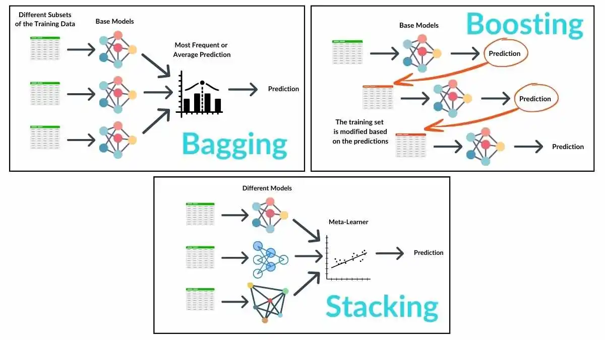
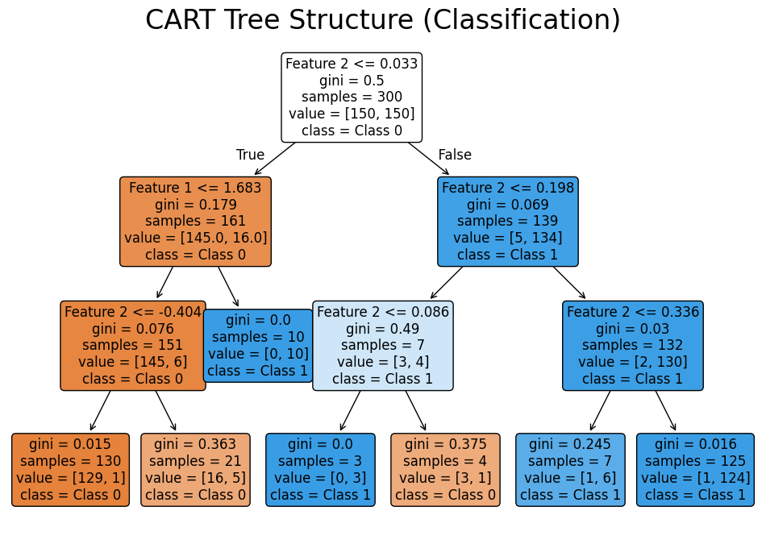
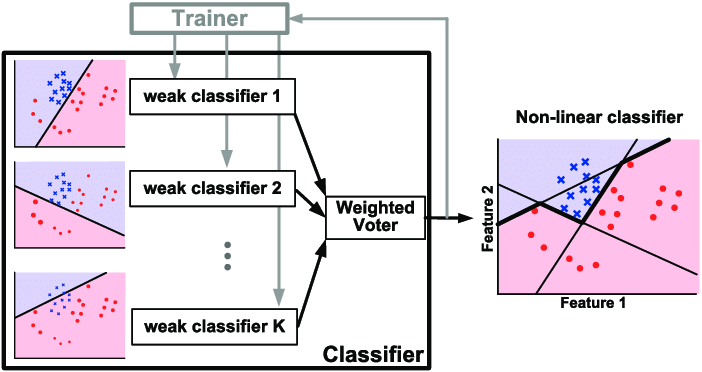
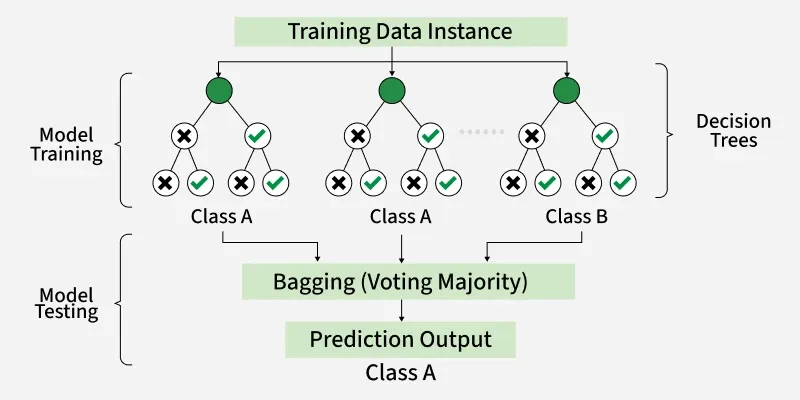

Machine Learning — Examination Preparation
Unit 5: Ensemble Methods, Decision Trees & SVM
Questions 41 – 50
Question 41
Ensemble methods are machine learning techniques that combine multiple models — called base learners — to produce a single, more accurate and robust model. The core principle is: many weak learners together form a strong learner. Ensemble methods address variance (overfitting), bias (underfitting), or both, depending on the technique used.

1. Bagging (Bootstrap Aggregating)
Bagging creates multiple models by training each on a different random sample of the training data drawn with replacement (bootstrap sampling). The final prediction is made by averaging outputs (regression) or majority voting (classification). Since models are trained independently, bagging is parallelisable.
- Draw B bootstrap samples from the training data.
- Train a separate model (usually a decision tree) on each sample.
- Combine predictions by averaging (regression) or voting (classification).
Effect: Primarily reduces variance. Works well with high-variance models like unpruned decision trees. The popular algorithm is Random Forest.
2. Boosting
Boosting builds models sequentially, where each new model focuses on correcting the errors of the previous one. Misclassified samples are given higher weights so the next model pays more attention to them. The final prediction is a weighted combination of all models.
- Train the first weak learner on the full dataset with equal weights.
- Identify misclassified samples and increase their weights.
- Train the next model on the re-weighted data.
- Repeat for T iterations; combine all models using weighted sum.
Effect: Primarily reduces bias. Converts weak learners into a strong learner. Popular algorithms: AdaBoost, Gradient Boosting, XGBoost.
3. Stacking (Stacked Generalisation)
Stacking trains multiple different types of models (base learners) and then trains a second-level model called a meta-learner to learn the optimal way to combine their predictions.
- Train multiple diverse base models (e.g., Decision Tree, SVM, Logistic Regression).
- Use cross-validation to generate out-of-fold predictions from each base model.
- Use these predictions as input features to train the meta-learner.
- The meta-learner produces the final prediction.
Effect: Combines the strengths of diverse models. Often achieves higher accuracy than any single model or homogeneous ensemble.
4. Comparison
| Aspect | Bagging | Boosting | Stacking |
|---|---|---|---|
| Training order | Parallel | Sequential | Parallel (then meta-learner) |
| Model type | Same model type | Same model type | Different model types |
| Focus | Reduces variance | Reduces bias | Combines strengths |
| Overfitting risk | Lower | Higher (if not tuned) | Moderate |
| Example | Random Forest | AdaBoost, XGBoost | Custom meta-learner |
Question 42 · Numerical
Training Data
| ID | Outlook | Humidity | PlayFootball |
|---|---|---|---|
| T1 | Sunny | High | No |
| T2 | Sunny | Normal | Yes |
| T3 | Overcast | High | Yes |
| T4 | Rain | High | Yes |
Test Data
| ID | Outlook | Humidity | Prediction |
|---|---|---|---|
| X1 | Overcast | Normal | ? |
| X2 | Rain | Normal | ? |
Step 1 — Entropy of the Full Training Set
Classes: Yes = 3, No = 1 (total = 4).
Step 2 — Information Gain for Outlook
Outlook subsets:
- Sunny (T1, T2): Yes=1, No=1 → Entropy = −(1/2)log₂(1/2) − (1/2)log₂(1/2) = 1.0
- Overcast (T3): Yes=1, No=0 → Entropy = 0 (pure)
- Rain (T4): Yes=1, No=0 → Entropy = 0 (pure)
Step 3 — Information Gain for Humidity
Humidity subsets:
- High (T1, T3, T4): Yes=2, No=1 → Entropy = −(2/3)log₂(2/3) − (1/3)log₂(1/3) ≈ 0.9183
- Normal (T2): Yes=1, No=0 → Entropy = 0 (pure)
Step 4 — Root Node Selection
Outlook has the highest Information Gain (0.3113 > 0.1226), so Outlook is the root node.
Step 5 — Build the Tree
- Outlook = Overcast → Only T3 (Yes) → Leaf: Yes
- Outlook = Rain → Only T4 (Yes) → Leaf: Yes
- Outlook = Sunny → T1 (No), T2 (Yes) → Mixed. Split further on Humidity:
- Humidity = High → T1 (No) → Leaf: No
- Humidity = Normal → T2 (Yes) → Leaf: Yes
Step 6 — Classify Test Data
| ID | Outlook | Humidity | Tree Path | Prediction |
|---|---|---|---|---|
| X1 | Overcast | Normal | Outlook = Overcast → Leaf | Yes |
| X2 | Rain | Normal | Outlook = Rain → Leaf | Yes |
Question 43
Decision trees use information theory metrics to decide the best attribute for splitting data at each node. The goal is to create pure subsets — subsets where data points belong mostly to one class. The three key metrics are Entropy, Information Gain, and Gini Index.
1. Entropy
Entropy measures the impurity or uncertainty in a dataset. A dataset where all instances belong to one class has entropy = 0 (pure). A dataset evenly split between classes has maximum entropy.
where pᵢ is the proportion of instances belonging to class i.
| Situation | Entropy Value |
|---|---|
| All instances in one class | 0 (perfectly pure) |
| Equal split between two classes | 1.0 (maximum for binary) |
| Range | 0 to log₂(K), where K = number of classes |
2. Information Gain
Information Gain (IG) measures the reduction in entropy achieved by splitting the dataset on a given attribute. It helps select the best attribute for splitting — the attribute that most reduces uncertainty.
where A is the attribute, Sᵥ is the subset of S where A has value v, and the sum is over all values v of A.
- Higher IG → better split — the attribute reduces more uncertainty.
- IG = 0 means the attribute provides no information.
- ID3 algorithm selects the attribute with the highest IG at each node.
3. Gini Index
The Gini Index measures the probability of misclassifying a randomly chosen element if it were randomly labelled according to the class distribution in the subset.
- Range: 0 to 0.5 for binary classification (0 = pure; 0.5 = maximally impure).
- Lower Gini → better split.
- Used in CART (Classification and Regression Trees) algorithm.
- Computationally faster than Entropy (no logarithm required).

4. Comparison of Metrics
| Metric | Measures | Best Value | Used In | Notes |
|---|---|---|---|---|
| Entropy | Uncertainty / impurity | 0 | ID3, C4.5 | Uses logarithm; computationally heavier |
| Information Gain | Entropy reduction from a split | High | ID3 | Biased toward attributes with many values |
| Gini Index | Misclassification probability | 0 | CART | Faster to compute; no log needed |
5. Conclusion
In decision trees, Entropy measures how disordered a dataset is, Information Gain selects the best feature by measuring the reduction in entropy, and the Gini Index provides a faster alternative impurity measure. All three metrics guide the construction of an efficient and accurate decision tree by identifying optimal splits at each node.
Question 44
AdaBoost (Adaptive Boosting) is an ensemble learning algorithm that combines multiple weak learners — typically decision stumps (one-level decision trees) — to create a strong classifier by adaptively focusing on misclassified samples. Each new model corrects the mistakes of the previous ones by increasing the weight of misclassified instances.
1. Key Concepts
| Term | Definition |
|---|---|
| Weak Learner | A model that performs slightly better than random guessing (e.g., decision stump). Each one alone is insufficient. |
| Strong Learner | The final combination of all weak learners, which achieves high accuracy. |
| Sample Weights | Each training instance has a weight. Misclassified instances get higher weights; correctly classified ones get lower weights. |
| Model Weight (α) | Each weak learner is given a weight based on its accuracy — more accurate learners have higher influence. |
2. Algorithm Steps
- Initialise weights: Assign equal weight to all N training samples: wᵢ = 1/N.
- Train a weak learner on the weighted training data.
- Calculate error: ε = Σ wᵢ for all misclassified samples.
- Compute model weight (alpha):
Higher accuracy (lower ε) → higher α → this model has more say in the final prediction.
- Update sample weights: Increase weights of misclassified samples, decrease weights of correctly classified ones.
- Normalise weights so they sum to 1.
- Repeat for T iterations (number of weak learners).
3. Final Prediction
The final output is the sign of the weighted sum of all weak learner predictions, where each prediction hₜ(x) ∈ {−1, +1}.
4. Example — Spam Detection
| Iteration | Model Focus | Action |
|---|---|---|
| 1 | All samples equal weight | Trains stump; misclassifies E2 → increase E2's weight |
| 2 | E2 has higher weight | New model focuses on E2; misclassifies E3 → increase E3's weight |
| 3 | E3 has higher weight | New model focuses on E3; combines with previous models |
| Final | Weighted combination of all stumps | Better accuracy than any single stump |

5. Advantages and Disadvantages
| Advantages | Disadvantages |
|---|---|
| Improves accuracy of weak models | Sensitive to noisy data and outliers |
| Works well with simple classifiers (decision stumps) | Can overfit if data is too complex or noisy |
| Reduces both bias and variance | Training is sequential → cannot be parallelised |
| No hyperparameter tuning beyond T and learning rate | Sensitive to mislabelled training data |
Question 45
Random Forest is a supervised ensemble learning algorithm used for both classification and regression. It builds multiple decision trees using bootstrap sampling and random feature selection, then combines their outputs to improve accuracy and reduce overfitting. It is based on two core concepts: Bagging and Random Feature Selection.
1. Working of Random Forest
- Bootstrap Sampling: From the original dataset, B random samples are drawn with replacement (bootstrap). Each sample is approximately 63% of the original data.
- Decision Tree Construction: A full, unpruned decision tree is built for each bootstrap sample.
- Random Feature Selection: At each node split, only a random subset of features is considered (typically √p features for classification, where p is total features). This decorrelates the trees.
- Prediction: Classification → majority vote across all trees. Regression → average of all tree outputs.

2. Why Random Feature Selection Helps
If all trees were trained on the same features, they would be correlated — they would make similar errors and averaging them would not help. By randomly restricting features at each split, the trees are decorrelated, so their errors are independent and averaging reduces variance significantly.
3. Pros and Cons
| Advantages | Disadvantages |
|---|---|
| High accuracy — averaging many trees reduces overfitting significantly compared to a single tree | Complex and harder to interpret than a single decision tree |
| Robust to outliers and noise — individual noisy trees are averaged out | Computationally expensive — training many trees is slow |
| Works well with large datasets and many features | High memory usage — all trees must be stored |
| Provides feature importance scores — useful for feature selection | Slower prediction compared to simpler models |
| Handles missing values reasonably well | May not perform well on very sparse or very high-dimensional data |
4. Applications
- Medical diagnosis and disease prediction
- Fraud detection in finance
- Recommendation systems
- Stock market prediction
- Remote sensing and image classification
Question 46
Support Vector Machine (SVM) is a supervised learning algorithm used primarily for classification. It finds the optimal hyperplane that separates data points into different classes while maximising the margin between the nearest points of each class.
1. Key Concepts
| Term | Definition |
|---|---|
| Hyperplane | The decision boundary that separates classes. In 2D it is a line; in 3D it is a plane; in n-D it is a hyperplane. |
| Support Vectors | The data points from each class that lie closest to the hyperplane. They are the critical points that define and support the boundary. |
| Margin | The perpendicular distance between the hyperplane and the nearest support vectors from each side. SVM maximises this margin. |
| Maximum Margin Hyperplane | The hyperplane that maximises the margin — the optimal decision boundary learned by SVM. |
2. Mathematical Representation
A hyperplane is defined as:
where w is the weight vector (normal to the hyperplane), x is the input feature vector, and b is the bias. The two margin boundaries are defined by w · x + b = +1 and w · x + b = −1. The margin width is:
Maximising the margin is equivalent to minimising ||w||².
3. Classification Mechanism Steps
- Plot training data in feature space.
- Identify all possible separating hyperplanes.
- Select the hyperplane with the maximum margin (minimum ||w||²).
- Identify support vectors — the points exactly on the margin boundaries.
- Classify new data based on which side of the hyperplane it falls on: if w·x + b > 0 → Class +1; if w·x + b < 0 → Class −1.
4. Non-Linear Classification — The Kernel Trick
When data is not linearly separable in the original feature space, SVM uses kernel functions to implicitly transform data into a higher-dimensional space where a linear hyperplane can separate the classes. The transformation is implicit — the kernel computes the dot product in the high-dimensional space without explicitly computing the transformation.
| Kernel | Formula | Use Case |
|---|---|---|
| Linear | K(x, z) = x · z | Linearly separable data |
| Polynomial | K(x, z) = (x · z + c)^d | Non-linear data with polynomial boundaries |
| RBF (Gaussian) | K(x, z) = exp(−γ||x − z||²) | General non-linear classification; most widely used |
5. Advantages and Disadvantages
| Advantages | Disadvantages |
|---|---|
| Effective in high-dimensional spaces | Computationally expensive for large datasets |
| Memory efficient — uses only support vectors | Kernel selection can be complex |
| Robust to overfitting in high dimensions | Not directly interpretable |
| Handles non-linear data via kernel trick | Sensitive to feature scaling and noise |
Question 47
XGBoost (Extreme Gradient Boosting) is an optimised and highly efficient implementation of the gradient boosting algorithm. It builds decision trees sequentially, where each new tree learns to predict the residual errors (gradients) of the previous ensemble. XGBoost is widely regarded as one of the best-performing algorithms for structured/tabular data.
1. Core Concept
Gradient boosting builds models by minimising a loss function using gradient descent in function space. Instead of updating model parameters directly, it trains a new decision tree to predict the negative gradient (residuals) of the loss at each step, then adds this tree to the ensemble.
where hₜ(x) is the new tree, η is the learning rate (shrinkage), and Fₜ₋₁ is the current ensemble.
2. Key Features of XGBoost
| Feature | Description |
|---|---|
| Regularisation (L1 & L2) | Penalises model complexity to prevent overfitting — unlike basic gradient boosting. |
| Tree Pruning | Prunes branches using a depth-first approach based on gain, removing branches that don't improve the objective. |
| Handling Missing Values | Automatically learns the best direction for missing values during training. |
| Parallel Processing | Parallelises the construction of each individual tree (across features), not the boosting itself. |
| Shrinkage (Learning Rate) | Scales the contribution of each new tree to prevent overfitting. |
| Column Sampling | Randomly samples features for each tree — similar to Random Forest — to reduce variance. |
3. Algorithm Steps
- Initialise model with a constant value (e.g., mean of target for regression).
- Compute gradients (residuals = actual − predicted) for all training samples.
- Fit a decision tree to predict the residuals.
- Update predictions: add the new tree (scaled by learning rate) to the current ensemble.
- Repeat steps 2–4 for T iterations.
4. Example — Student Mark Prediction
| Hours Studied | Actual Marks |
|---|---|
| 1 | 35 |
| 2 | 40 |
| 3 | 50 |
| 4 | 60 |
| 5 | 70 |
Iteration 1: Initial prediction = mean(35,40,50,60,70) = 51. Residuals: [−16, −11, −1, +9, +19]. Tree 1 predicts these residuals and updates predictions. Iteration 2: Compute new residuals from updated predictions. Tree 2 predicts these smaller residuals. Each iteration reduces the error further until convergence.
5. Advantages and Disadvantages
| Advantages | Disadvantages |
|---|---|
| High accuracy and performance on structured data | Complex algorithm with many hyperparameters |
| Handles large datasets efficiently | Requires careful parameter tuning |
| Built-in regularisation reduces overfitting | Computationally intensive for very large datasets |
| Handles missing values automatically | Less effective on unstructured data (images, text) |
Question 48
1. Decision Tree
A Decision Tree is a supervised machine learning algorithm that recursively splits the dataset into subsets based on the feature that provides the highest information gain (or lowest Gini impurity) at each node. The tree grows until stopping criteria are met (e.g., maximum depth, minimum samples per leaf, or pure nodes).
Working: Select the best feature using IG or Gini → split dataset → repeat recursively on each child node → assign the majority class of each leaf as its prediction.
- Advantages: Easy to understand and visualise; requires minimal data preprocessing; handles both categorical and numerical data.
- Disadvantages: Highly prone to overfitting (especially when grown deep); sensitive to small changes in training data — a different sample can produce a completely different tree.
2. Random Forest
Random Forest is an ensemble of decision trees, each trained on a different bootstrap sample of the data with random feature selection at each split. The final prediction is made by majority vote (classification) or averaging (regression) across all trees.
Working: Bootstrap sample → grow decision tree with random feature subset at each node → repeat B times → aggregate predictions.
- Advantages: Significantly reduces overfitting through averaging; robust to outliers and noise; provides feature importance scores.
- Disadvantages: Less interpretable than a single tree; higher computational cost; more memory usage.
3. Key Differences
| Aspect | Decision Tree | Random Forest |
|---|---|---|
| Model Count | 1 tree | Many trees (ensemble) |
| Training Data | Full dataset | Bootstrap samples (with replacement) |
| Feature Selection | All features considered at each split | Random subset of features at each split |
| Accuracy | Moderate — single tree can be inaccurate | High — averaging reduces errors |
| Overfitting | High risk — easily memorises training data | Low risk — averaging decorrelated trees |
| Interpretability | High — easy to visualise and explain | Low — hard to interpret ensemble of 100+ trees |
| Computation | Fast training and prediction | Slower; requires more resources |
4. Conclusion
Decision Trees offer simplicity and interpretability but suffer from high variance and overfitting. Random Forest addresses both problems by aggregating many decorrelated trees, trading interpretability for substantially higher accuracy and robustness. In practice, Random Forest is preferred for most classification tasks where accuracy matters more than explainability.
Question 49
Support Vector Machine (SVM) is a supervised machine learning algorithm used for classification and regression that works by finding the optimal hyperplane which maximises the margin between different classes. It is particularly powerful for high-dimensional data and data where the number of features exceeds the number of samples.
1. How SVM Works
Core Idea: SVM seeks the hyperplane that separates classes while maximising the distance (margin) between the nearest data points of each class — these nearest points are the support vectors. Maximising the margin leads to better generalisation on unseen data.
Mathematical Basis: SVM solves a constrained optimisation problem: minimise (1/2)||w||² subject to yᵢ(w·xᵢ + b) ≥ 1 for all training points. This ensures all points are on the correct side of their margin boundary.
Kernel Trick: When data is not linearly separable, SVM uses kernel functions to project data into a higher-dimensional space where linear separation is possible. Common kernels: Linear, Polynomial, RBF (Radial Basis Function).
2. Example — Fruit Classification
Classify fruits as Apple or Orange based on two features: weight (g) and colour intensity (0–100).
- Apples: lighter weight, higher colour intensity (red) → cluster on one side.
- Oranges: heavier weight, lower colour intensity (orange) → cluster on the other side.
SVM finds the line (hyperplane in 2D) that best separates apples from oranges while maximising the gap between them. Support vectors are the apple and orange points closest to this boundary. A new fruit is classified based on which side of the hyperplane it falls.
3. Pros and Cons
| Aspect | Advantages | Disadvantages |
|---|---|---|
| Accuracy | High accuracy in classification tasks, especially with clear margins | Sensitive to noise and overlapping class distributions |
| Scalability | Works well with small to medium-sized datasets | Slow and memory-intensive for very large datasets |
| Flexibility | Kernel trick allows effective handling of non-linear boundaries | Kernel selection and tuning of C, γ parameters can be complex |
| Interpretability | Strong mathematical foundation; well-understood theoretically | Hard to interpret results intuitively; not easily explainable to non-experts |
4. Applications
- Text classification and spam detection
- Image recognition and face detection
- Bioinformatics (protein classification)
- Handwriting recognition
Question 50
Bagging and Boosting are both ensemble methods that combine multiple models to improve overall performance, but they differ fundamentally in how models are trained, what problem they address, and how predictions are combined.
1. Bagging (Bootstrap Aggregating)
Bagging creates multiple models by training each on a different random bootstrap sample of the training data (sampled with replacement). Models are trained independently and in parallel. The final prediction is made by averaging (regression) or majority voting (classification). All models have equal weight in the final prediction.
Primary effect: Reduces variance. Prevents overfitting. Best suited for high-variance, low-bias models (e.g., deep decision trees).
2. Boosting
Boosting trains models sequentially, where each new model focuses on the errors made by the previous ones. It uses the original dataset but adjusts the weights of samples — misclassified samples get higher weights. Models are combined using a weighted sum, where more accurate models are given more influence.
Primary effect: Reduces both bias and variance. Converts weak learners into strong ones. Examples: AdaBoost, Gradient Boosting, XGBoost.
3. Detailed Comparison
| Aspect | Bagging | Boosting |
|---|---|---|
| Data Sampling | Bootstrap samples (random, with replacement) | Original data with adjusted sample weights |
| Training Order | Parallel — models train independently | Sequential — each model depends on previous |
| Model Weights | Equal — all models contribute equally | Unequal — better models get higher weight |
| Primary Benefit | Reduces variance | Reduces bias and variance |
| Overfitting Risk | Less prone to overfitting | More prone if not tuned (noisy data) |
| Speed | Faster — parallelisable | Slower — sequential |
| Outlier Sensitivity | More stable with noisy data | Sensitive — high-weight outliers dominate |
| Best For | High-variance models (Decision Trees) | High-bias models (Weak Learners) |
| Example Algorithms | Random Forest, Bagged Trees | AdaBoost, Gradient Boosting, XGBoost |
4. When to Use Which
Use Bagging when your model is already complex and overfitting (high variance). Use Boosting when your model is too simple and underfitting (high bias), or when you need to squeeze the maximum performance from weak learners. In practice, boosting algorithms like XGBoost and LightGBM consistently outperform bagging on most structured datasets, but require more careful tuning to avoid overfitting.